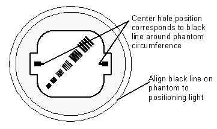
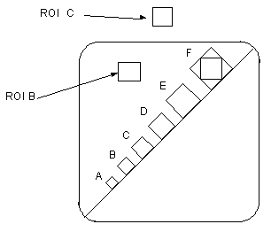
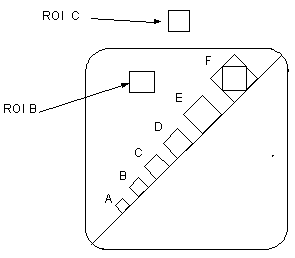
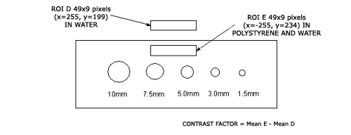

Media File 2: QA#1 - MTF and Contrast Scale

Illustration 5: QA Phantom Scan Plane Indication

IMAGE DATA SHEET
QA#1/S/10mm/120KV/170mA/2sec. Scan at 0 mm. Use this slice data for following Bone Retro.
Table 7: QA#1 MTF and CONTRAST SCALE
| Exam #, # of Slice | MTF | MTF 4 slice average | Contrast Scale | Comments | Scan Tech Aprov |
| SPECS | --- | 0.68 to 1.0 | 110.0 to 130.0 | --- | --- |
Box Size : 17 x 17 pixels
Image Acceptance Date:__________________
Image Reviewer: _________________
Illustration 6: QA Phantom ROI Placement

Standard deviation of ROI Box over F bar pattern in plexiglass.
Average standard deviation of plexiglass and water (i.e., image noise).
SDave= (SDB + SDC) / 2.
Contrast Scale = mean of B - mean of C
Modulation = (SDA2 - SDave2)1/2
MTF = 2.2 x (Modulation / Contrast Scale)
QA#1/S/10mm/120KV/170mA/2sec/ Bone Retro/ DISPLAY FOV=15cm. Scan at 0 mm.
Table 8: Line Pattern and Artifacts
| Exam #, # of Slice | Line Patterns Visible | Artifacts | Comments | Scan Tech Aprov |
| SPECS | B,C,D,E,F | --- | --- | --- |
Image Acceptance Date:__________________
Image Reviewer: _________________
| NOTE: | For a printable version of the QA#1 data sheets, click on the pdf icons below. |
Media File 2: QA#1 - MTF and Contrast Scale

QA#1/S/10mm/120KV/340mA/1sec. DO NOT use this technique for Vx image series. Scan at 0 mm.
Table 9: QA#1 MTF and CONTRAST SCALE
| Exam #, # of Slice | MTF | MTF 4 slice average | Contrast Scale | Comments | Scan Tech Aprov |
| SPECS | --- | 0.68 to 1.0 | 110.0 to 130.0 | --- | --- |
Box Size : 17 x 17 pixels
Image Acceptance Date:__________________
Image Reviewer: _________________
Illustration 7: QA#1 MTF and CONTRAST SCALE

Standard deviation of ROI Box over F bar pattern in plexiglass.
Average standard deviation of plexiglass and water (i.e., image noise), SDave = (SDB + SDC) / 2.
Contrast Scale = mean of B - mean of C
Modulation = (SDA2 - SDave2)1/2
MTF = 2.2 x (Modulation / Contrast Scale)
| NOTE: | For a printable version of the QA#1 data sheets (contd.), click on the pdf icons below. |
Media File 3: QA#1 (cont.)

IMAGE DATA SHEET - QA Phantom
QA#2/S/10mm/120KV/170mA/2 sec. Scan at 35mm. PERISTALTIC OFF.
Table 10: QA#2 CONTRAST FACTOR
| Exam #, # of Slice | Visible Holes (View at window of 20) | Contrast factor | Comments/Artifacts | Scan Tech Aprov |
| SPECS | See below | 4.0 to 12.0 | --- | --- |
| Contrast Factor | Lower limit number of visible holes * | Upper limit number of visible holes* | Smallest visible hole size |
| 4.00 to 7.99 | 3 | 5 | 5mm |
| 8.00 to 12.00 | 4 | 5 | 3mm |
* Number of holes required to be visible, depending on contrast factor. Two out of four slices taken must meet specs.
Image Acceptance Date:__________________
Image Reviewer: _________________
Illustration 8: Contrast Factor Slice

| NOTE: | For a printable version of the QA#2 data sheet, click on the pdf icon below. |
Media File 4: QA#2 - Contrast Factor

IMAGE DATA SHEET - QA Phantom #3
QA#3/S/10mm/120KV/170mA/2 sec. Scan at 50mm. PERISTALTIC OFF.
Table 11: QA#3 MEANS and STANDARD DEVIATION (51 x 51 pixels)
| Exam #, # of Slice | Mean | Std Dev | Average Std Dev Average of 4 slices | Comments/ Artifacts | Scan Tech Aprov |
| SPECS | 0.0 +/- 1.5 | --- | See below* | --- | --- |
Box Size : 51 x 51 pixels
* If tube has < 5000 scans, spec is 3.00 to 3.60.
* If tube has > 5000 scans, spec is 3.00 to 3.80.
Image Acceptance Date:__________________
Image Reviewer: _________________
QA#3/S/10mm/120KV/170mA/2 sec. Do not scan, evaluate images from previous step.
Table 12: QA#3 MEANS and STANDARD DEVIATION (31 x 31 pixels)
| Exam #, # of Slice | AvXc | AvXo | AvXo - AvXc | Comments/Artifacts | Scan Tech Aprov | |
| SPECS | --- | --- | --- | --- | --- | --- |
| Box Size | 31 x 31 pixels |
| Coordinates: | |
| Center | 255, 255 |
| Outside | 255, 94 416, 255 255, 416 94, 255 |
Image Acceptance Date:__________________
Image Reviewer: _________________
Artifact Limits: Rings 4.0/4.8 cts Center Spot N/A Band 2.8 cts Clump N/A Streaks 4.0 cts Band radius 0-8.5 cm Smudge 2.2 cts Center Artifact 3.5 Std Dev 1 mm 4.0 cts
Image Acceptance Date:__________________
Image Reviewer: _________________
| NOTE: | For a printable version of the QA#3 data sheet, click on the pdf icon below. |
Media File 5: QA#3 - Means and Standard Deviation